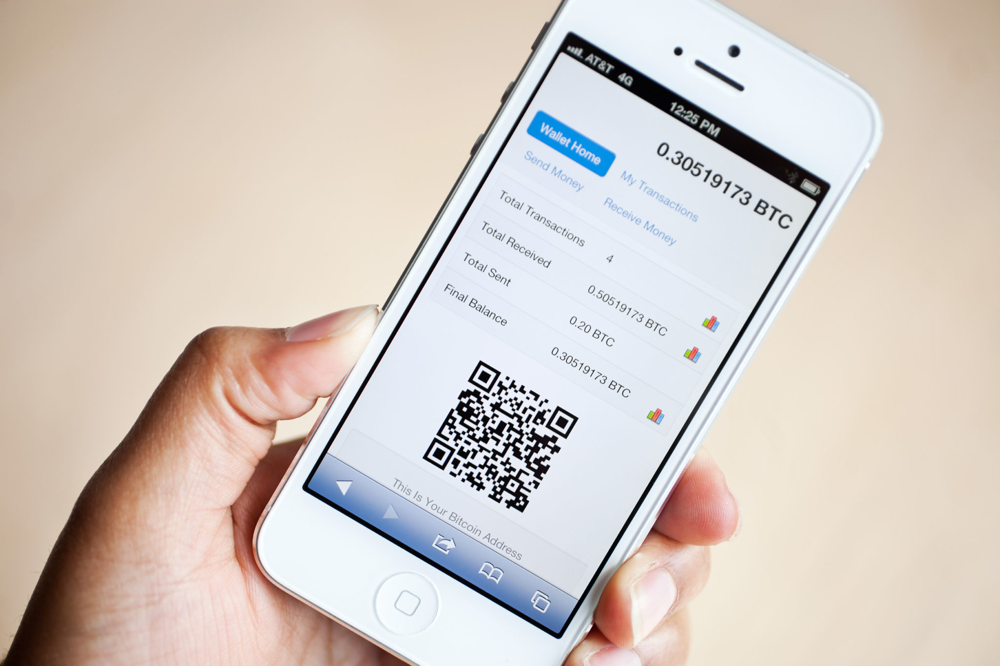
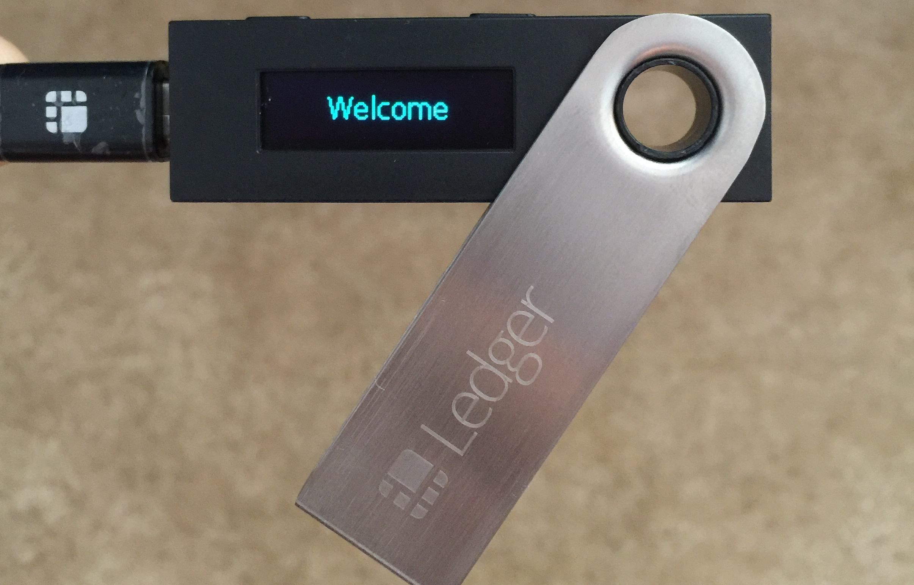

As mentioned crypto currency is a digital currency, thus it cannot be stored physically. Like your wallet in which you store your physical money, credit/debit cards, id’s etc, a crypto currency is also stored in a digital wallet. These wallet services are provided by Crypto Currency exchanges in addition to individual organisation When it comes to receive crypto money, like a bank account number is given to people to receive money in your bank account, you will need to give an address of your wallet to people, to receive your crypto money
There are several types of wallets that provide different ways to store and access your digital currency. Wallets can be broken down into three distinct categories – software, hardware, and paper. Software wallets can be a desktop, mobile or online
wallets are downloaded and installed on a PC or laptop. They are only accessible from the single computer in which they are downloaded. Desktop wallets offer one of the highest levels of security however if your computer is hacked or gets a virus there is the possibility that you may lose all your funds.Below listing widely used Desktop wallets: -1. Electrum2. Multibit HD3. Armory
wallets run on the cloud and are accessible from any computing device in any location. While they are more convenient to access, online wallets store your private keys online and are controlled by a third party which makes them more vulnerable to hacking attacks and theft.Some widely used Online wallets are: -1. Blockchain wallet 2. Coinbase 3. Jaxx4. Bitgo wallet
wallets run on an app on your phone and are useful because they can be used anywhere including retail stores. Mobile wallets are usually much smaller and simpler than desktop wallets because of the limited space available on a mobile.. They are:-1. Mycelium 2. Samurai 3. Copay4. Breadwallet5. Zebpay(Indian wallet)6. Unocoin(Indian wallet)
wallets differ from software wallets in that they store a user’s private keys on a hardware device like a USB. Although hardware wallets make transactions online, they are stored offline which delivers increased security. Hardware wallets can be compatible with several web interfaces and can support different currencies; it just depends on which one you decide to use. What’s more, making a transaction is easy. Users simply plug in their device to any internet-enabled computer or device, enter a pin, send currency and confirm. Hardware wallets make it possible to easily transact while also keeping your money offline and away from danger.Some widely used Hardware wallets are: - 1. Trezor2. Ledger Nano S 3. Keepkey
wallets are easy to use and provide a very high level of security. While the term paper wallet can simply refer to a physical copy or printout of your public and private keys, it can also refer to a piece of software that is used to securely generate a pair of keys which are then printed. Using a paper wallet is relatively straightforward. Transferring Bitcoin or any other currency to your paper wallet is accomplished by the transfer of funds from your software wallet to the public address shown on your paper wallet. Alternatively, if you want to withdraw or spend currency, all you need to do is transfer funds from your paper wallet to your software wallet. This process, often referred to as ‘sweeping,’ can either be done manually by entering your private keys or by scanning the QR code on the paper wallet.
Here are 10 steps needed to create a paper wallet:
1. To generate a new bitcoin address, open BitAddress.org in your browser (or LiteAddress.orgfor litecoin).
2. BitAddress (but not LiteAddress) will ask you to create some randomness by either randomly typing characters into the form or moving your cursor around.
3. You will be presented with your public and private keys and their respective QR codes. Do not scan these.
4. Click the ‘Paper wallet’ tab.
5. Select the number of addresses to generate.
6. If you don’t wish to keep the bitcoin artwork, click the ‘Hide art?’ button.
7. Click the ‘Generate’ button to create new wallets.
8. Once the wallets are generated, click the ‘Print’ button to make a hard copy.
9. Your browser will ask you to select the printer you wish to use. In the case of Google Chrome, you may also save the page as a PDF file.
10. Make a note of the public addresses, or scan the public address QR code in your bitcoin (or litecoin) app and start depositing funds.
For users of the Blockchain.info website, there is also a basic paper wallet option too. Click on the ‘Import/Export’ option, and look for the ‘Paper wallet’ link on the left-hand menu.
A much more sophisticated option for your paper wallet can be found at Bitcoinpaperwallet.com
The level of security depends on the type of wallet you use (desktop, mobile, online, paper, hardware) and the service provider. Online wallets can expose users to possible vulnerabilities in the wallet platform which can be exploited by hackers to steal your funds. Offline wallets, on the other hand, cannot be hacked because they simply aren’t connected to an online network and don’t rely on a third party for security. Remember that no matter which wallet you use, losing your private keys will lead you to lose your money. Similarly, if your wallet gets hacked, or you send money to a scammer, there is no way to reclaim lost currency or reverse the transaction. You must take precautions and be very careful!
Although Bitcoin is by far the most well-known and popular digital currency, hundreds of new cryptocurrencies (referred to as altcoins) have emerged, each with distinctive ecosystems and infrastructure. If you’re interested in using a variety of cryptocurrencies, the good news is, you don’t need set up a separate wallet for each currency. Instead of using a cryptocurrency wallet that supports a single currency, it may be more convenient to set up a multi-currency wallet which enables you to use several currencies from the same wallet